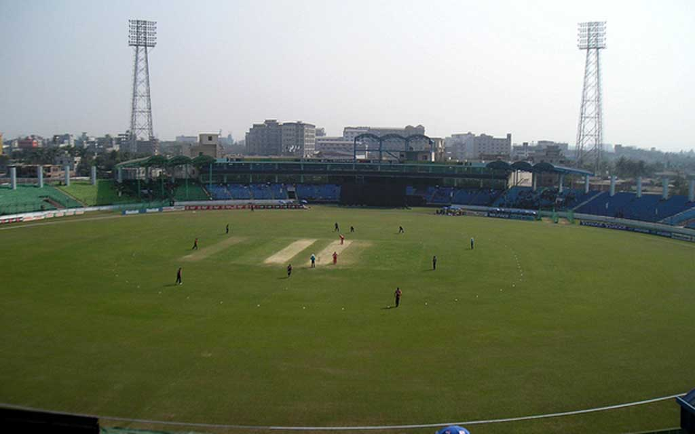

১। খান সাহেব ওসমান আলী ষ্টেডিয়াম (আন্তর্জাতিক মানের ষ্টেডিয়াম)
ঢাকা-নারায়ণগঞ্জ লিংক রোড সংলগ্ন রামারবাগ এলাকায় অবস্থিত খান সাহেব ওসমান আলী ষ্টেডিয়াম। এটি একটি আন্তর্জাতিক মানের ষ্টেডিয়াম। ২০১১সালে বিশ্বকাপ ক্রিকেট খেলার সময় এখানে কয়েকটি প্রস্তুতি ম্যাচ খেলা হয়েছে। এছাড়া এখানে বিভিন্ন ধরণের দেশী ঘরোয়া ও আন্তর্জাতিক খেলা অনুষ্ঠিত হয়ে থাকে। খোলামেলা পরিবেশে অবস্থিত ষ্টেডিয়ামটি অত্যন্ত সুন্দর ও মনোরম। এর চতুর্পাশে রয়েছে সুবিশাল খোলা জায়গা, যা খেলার দর্শক সহ যে কোন দর্শনার্থীর চোখ জুড়ায়।
যাতায়াত- ঢাকা(গুলিস্তান), যাত্রাবাড়ী অথবা নারায়ণগঞ্জ থেকে বাস/ সিএনজি/ অটোরিক্সা যোগে সড়কপথে ঢাকা নারায়ণগঞ্জ লিংক রোড সংলগ্ন রামারবাগ আসলেই দেখতে পাবেন উক্ত ষ্টেডিয়াম।
ভাড়ার হার- ঢাকা থেকে ২০ টাকা, নারায়ণগঞ্জ থেকে ১৫ টাকা । (জনপ্রতি বাস ভাড়া)
২। ভিআইপি জেটি (মেরি এন্ডারসন ভাসমান রেস্তোরা ও বার)

শত বছরের কাল পরিক্রমায় কুতুবপুর ইউনিয়নস্থিত ঢাকা নারায়ণগঞ্জ রোড সংলগ্ন পাগলা বাজার বুড়িগঙ্গা নদীর পাড়ে অবস্থিত রয়েছে ভিআইপি জেটি (মেরী এন্ডারসন ভাসমান রেস্তোরা ও বার)। দেশ বিদেশ থেকে প্রচুর দর্শনার্থীর আগমন ঘটে উক্ত স্থানে। নদীর পাড়ে অবস্থিত বলে স্থানীয় অনেকেই ক্লান্তি নিবারনের লক্ষ্যে উক্ত স্থানে সমবেত হয়। এছাড়া এখানকার গাছপালা সবুজের সমারোহ যে কারোর চোখ জুড়ায়। নদীর উপর ভাসমান রেস্তোরাতে দেশী বিদেশী সব ধরণের খাবারের ব্যবস্থা থাকায় এটা পর্যটকদের জন্য আলাদা আকর্ষণ যোগায়। নদীপথে, সড়ক পথে ও রেল পথে খুব সহজেই এখানে আসা যায়।
যাতায়াত- ঢাকা (গুলিস্তান), যাত্রাবাড়ী অথবা নারায়ণগঞ্জ থেকে বাস/ সিএনজি/ অটোরিক্সা যোগে সড়কপথে ঢাকা নারায়ণগঞ্জ রোড সংলগ্ন পাগলা বাজার আসলেই দেখতে পাবেন ভিআইপি জেটি (মেরী এন্ডারসন ভাসমান রেস্তোরা ও বার)।
ভাড়ার হার- ঢাকা থেকে ২০ টাকা, নারায়ণগঞ্জ থেকে ১৫ টাকা। (জনপ্রতি বাস ভাড়া)।